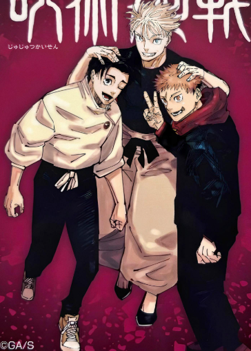
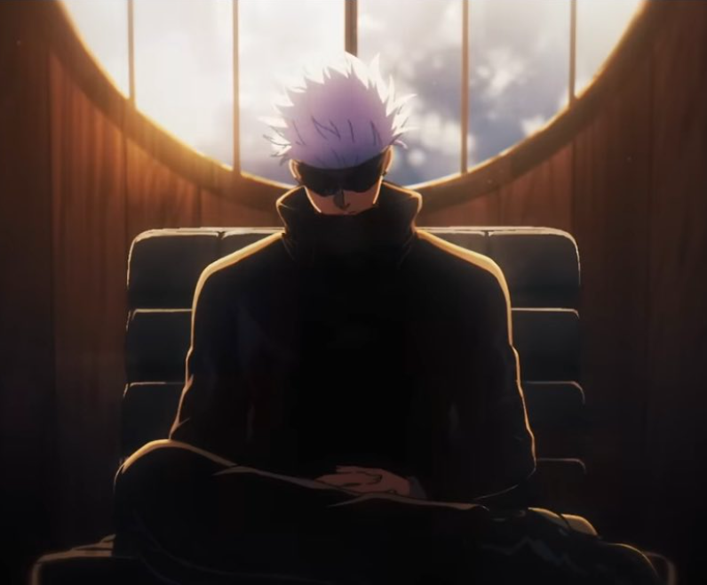

However, even though he has immense respect due to his title of The Strongest, he still has to grapple with the immense loneliness that comes with that title. He has no one he can call a true friend after Geto departed from his life and because of that, he has no one who can even begin to relate to his circumstances with the only person being able to relate to him he not only has far surpassed, but is also a murderer so far drenched not his ideologies, where he can barely be called a human with how many atrocities he committed. He also is treated by most people not as a human being with emotions and feeling, but as a mere weapon, a destructive weapon whose only purpose is to fight strong curses that no one else can handle, with very few in the Jujutsu world respecting him as a mentor and seeing him for more then just his unimaginable power. With his immense strength and incredible abilities not only making him untouchable physically, but also mentally too, with this belief likely being one of the reasons why Gojo strives so hard to find and raise sorcerers as strong as him, so he doesn’t have to suffer the immense loneliness and isolation that being the strongest comes with.
